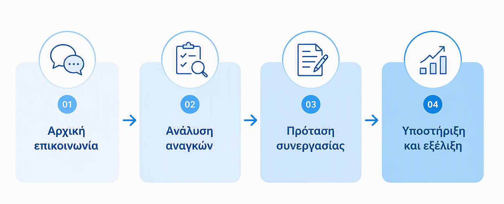

Πώς δουλεύουμε
Η συνεργασία ξεκινά με κατανόηση των αναγκών σας.
Αρχική επικοινωνία
Συζητάμε τον τρόπο λειτουργίας και τις βασικές ανάγκες.
Ανάλυση αναγκών
Καταγράφουμε τις λογιστικές, φοροτεχνικές, μισθοδοτικές, συμβουλευτικές ή οργανωτικές ανάγκες.
Πρόταση συνεργασίας
Προτείνουμε το πλαίσιο υπηρεσιών που ταιριάζει στις ανάγκες σας.
Υποστήριξη και εξέλιξη
Παρέχουμε συνεχή υποστήριξη και προτάσεις βελτίωσης.
